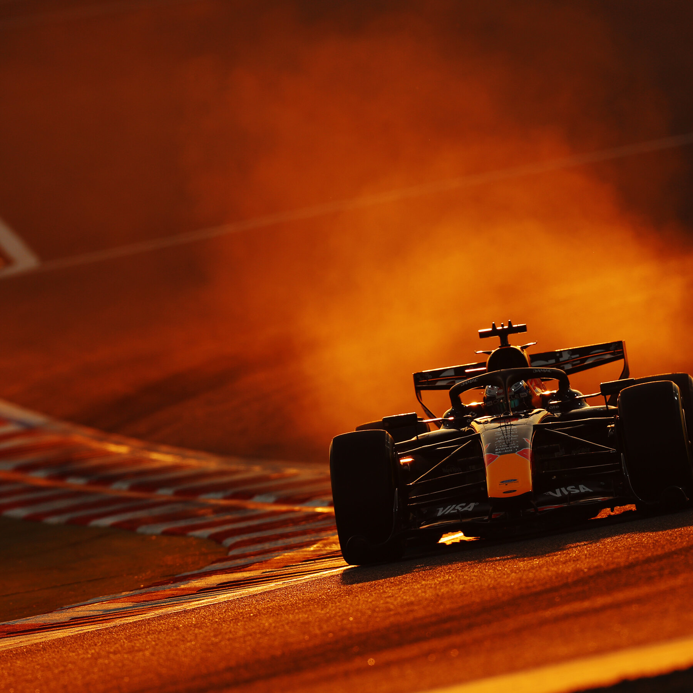

La Fórmula 1 (F1) 2026 continuará este fin de semana con la séptima fecha del calendario, que será el Gran Premio (GP) de Canadá en el Circuito Gilles Villeneuve de Montreal. En la práctica será la quinta prueba del año porque se cancelaron los eventos en Bahréin y Arabia Saudita a raíz de la Guerra de Medio Oriente.
La actividad comenzará este viernes 22 de mayo y se extenderá hasta el domingo 24. En la primera jornada se realizará la única práctica y, a continuación, la clasificación para la carrera sprint. El sábado se desarrollará la prueba abreviada y, a continuación, los 22 pilotos de las 11 escuderías clasificarán para la final del domingo.